社会科学における因果推論
7/ 傾向スコア
宋財泫（関西大学）
1 観察データと因果推論
因果推論の基本枠組み (Rubin Causal Model)
個体\(i\)に対する処置を\(D_i\) \(\in\) {0, 1}とし、潜在的結果（Potential Outcomes）を\(Y_i(1)\)および\(Y_i(0)\)と定義
因果推論における推定対象（estimands）
- ATE (Average Treatment Effect): 全集団における平均処置効果
- \(\tau_{\tiny{\textsf{ATE}}}\) = \(\mathbb{E}[Y(1) - Y(0)]\)
- ATT (Average Treatment Effect on the Treated): 処置群における平均効果
- \(\tau_{\tiny{\textsf{ATT}}}\) = \(\mathbb{E}[Y(1) - Y(0) | D = 1]\)
- ATC (Average Treatment Effect on the Controls): 対照群における平均効果
- \(\tau_{\tiny{\textsf{ATC}}}\) = \(\mathbb{E}[Y(1) - Y(0) | D = 0]\)
因果推論の根本問題
因果推論の根本問題（fundamental problem of causal inference）
- 任意の個体\(i\)について、\(Y_i(1)\)と\(Y_i(0)\)を同時に観測することは不可能
- 反実仮想（counterfactual）の欠損
- 単純なグループ間平均の差（DiM estimator）は… \[
\begin{align}
& \mathbb{E}[Y_i | D_i = 1] - \mathbb{E}[Y_i | D_i = 0] \\
= & \mathbb{E}[Y_i(1) | D_i = 1] - \mathbb{E}[Y_i(0) | D_i = 0] \\
= & \mathbb{E}[Y_i(1) | D_i = 1] - \mathbb{E}[Y_i(0) | D_i = 1] + \mathbb{E}[Y_i(0) | D_i = 1] - \mathbb{E}[Y_i(0) | D_i = 0] \\
= & \underbrace{\mathbb{E}[Y_i(1) - Y_i(0) | D_i = 1]}_{\textsf{ATT}} + \underbrace{\mathbb{E}[Y_i(0) | D_i = 1] - \mathbb{E}[Y_i(0) | D_i = 0]}_{\textsf{selection bias}}
\end{align}
\]
- セレクションバイアス（selection bias）の解消するこそが因果推論の主目的となる。
条件付き独立仮定と共変量調整
条件付き独立仮定（Conditional Independence Assumption: CIA）1
- 観察研究においてセレクションバイアスを除去するための最重要仮定
\[ \{Y(0), Y(1)\} \mathop{\perp\!\!\!\!\perp} D | X \]
- 共変量ベクトル\(X\)を一定（= 条件付け）に保てば、処置割り当て\(D\)は潜在的結果\((Y(0), Y(1))\)と独立（あたかもランダム割り当てされたかのような状態）になる
- \(\Rightarrow\) 共変量調整
- この仮定のもとで、共変量\(X\) = \(x\)内のグループ間平均の差からCATExが識別可能
- \(\mathbb{E}[Y(1) - Y(0) | X = x] = \mathbb{E}[Y | D = 1, X = x] - \mathbb{E}[Y | D = 0, X = x]\)
伝統的な共変量調整の方法
-
サブクラス化（sub-classification）：\(X\)のカテゴリごとにグループ化し、グループ内効果の加重平均を求める
- 例）男女ごとにゲームプレイ時間と身長の関係を推定し、加重平均
- 正確マッチング（exact matching）：各処置個体に対し、全く同じ\(X\)を持つ対照個体を割り当てる
-
回帰分析（regression）：\(Y_i = \alpha + \tau D_i + \beta X_i + \varepsilon_i\)をOLSで推定
- 前回のスライド参照
- 参考）処置変数を含む全変数の交差項を入れた飽和モデル（saturated model）1は正確マッチングと等価
マッチングの考え方
正確マッチング（exact matching）の例
- 例）\(i\)=4と7は処置有無を除く共変量の値が一致するため、お互い潜在的結果として使用可能
- 例）統制群の中に\(i\)=10と共変量が完全に一致する個体がないため、分析から除外
| \(i\) | \(D\) | \(X1\) | \(X2\) | \(Y\) |
|---|---|---|---|---|
| 1 | 0 | 1 | 1 | 0 |
| 2 | 0 | 3 | 1 | 3 |
| 3 | 0 | 2 | 0 | 2 |
| 4 | 0 | 0 | 1 | 0 |
| 5 | 0 | 2 | 1 | 3 |
| 6 | 0 | 1 | 0 | 3 |
| \(i\) | \(D\) | \(X1\) | \(X2\) | \(Y\) |
|---|---|---|---|---|
| 7 | 1 | 0 | 1 | 3 |
| 8 | 1 | 3 | 1 | 5 |
| 9 | 1 | 1 | 0 | 4 |
| 10 | 1 | 3 | 0 | 6 |
| \(i\) | \(D\) | \(X1\) | \(X2\) | \(Y(0)\) | \(Y(1)\) | ITE |
|---|---|---|---|---|---|---|
| 7 vs. 4 | 1 | 0 | 1 | 0 | 3 | 3 |
| 8 vs. 2 | 1 | 3 | 1 | 3 | 5 | 2 |
| 9 vs. 6 | 1 | 1 | 0 | 3 | 4 | 1 |
| 10 | 1 | 2 | 0 | ? | 6 | ? |
| ATT | 2 |
観察不可能な反事実をどう扱うか
観察不可能な反事実（「?」）をどう扱うか
| 統制群 | vs | 処置群 |
|---|---|---|
| \(Y\)( 👩 ) | \(\leftarrow\) 比較 \(\rightarrow\) | \(Y\)( 👩 ) |
| \(Y\)( 👨🏿 ) | \(\leftarrow\) 比較 \(\rightarrow\) | ? |
| \(Y\)( 👩🏻 ) | \(\leftarrow\) 比較 \(\rightarrow\) | \(Y\)( 👩🏻 ) |
| \(Y\)( 👨🏻 ) | \(\leftarrow\) 比較 \(\rightarrow\) | ? |
| \(Y\)( 👩🏽 ) | \(\leftarrow\) 比較 \(\rightarrow\) | \(Y\)( 👩🏽 ) |
| \(Y\)( 👨 ) | \(\leftarrow\) 比較 \(\rightarrow\) | \(Y\)( 👨 ) |
| ? | \(\leftarrow\) 比較 \(\rightarrow\) | \(Y\)( 👩🏿 ) |
| ? | \(\leftarrow\) 比較 \(\rightarrow\) | \(Y\)( 👨🏼 ) |
回帰分析による因果推論の考え方
推定したモデルに基づき、反事実を作り上げて比較する
- 正確なモデルの設定が重要
| 統制群 | vs | 処置群 |
|---|---|---|
| \(Y\)( 👩 ) | \(\leftarrow\) 比較 \(\rightarrow\) | \(Y\)( 👩 ) |
| \(Y\)( 👨🏿 ) | \(\leftarrow\) 比較 \(\rightarrow\) | \(\widehat{Y}\)( 👨🏿 ) |
| \(Y\)( 👩🏻 ) | \(\leftarrow\) 比較 \(\rightarrow\) | \(Y\)( 👩🏻 ) |
| \(Y\)( 👨🏻 ) | \(\leftarrow\) 比較 \(\rightarrow\) | \(\widehat{Y}\)( 👨🏻 ) |
| \(Y\)( 👩🏽 ) | \(\leftarrow\) 比較 \(\rightarrow\) | \(Y\)( 👩🏽 ) |
| \(Y\)( 👨 ) | \(\leftarrow\) 比較 \(\rightarrow\) | \(Y\)( 👨 ) |
| \(\widehat{Y}\)( 👩🏿 ) | \(\leftarrow\) 比較 \(\rightarrow\) | \(Y\)( 👩🏿 ) |
| \(\widehat{Y}\)( 👨🏼 ) | \(\leftarrow\) 比較 \(\rightarrow\) | \(Y\)( 👨🏼 ) |
回帰分析の限界（ATTの例）
すべての因果推論は潜在的結果間の比較
\[ \tau_{\tiny \mbox{ATT}} = \mathbb{E}[Y_i(1) - Y_i(0) | D_i = 1] \]
欠損している（=観察不可能）\(Y_i(0)\)を回帰分析を用いて代入（imputation）する
\[ \widehat{\tau}_{\tiny \mbox{ATT}} = \mathbb{E}[Y_i(1) - \textcolor{red}{\widehat{Y_i}(0)} | D_i = 1] \]
\(\widehat{Y_i}(0)\)の推定方法
- 一般的にパラメトリックモデルが使われる \(\Rightarrow\) 回帰分析
- \(Y_i\)を\(\alpha + \tau D_i + \beta_1 {X1}_i + \beta_2 {X2}_i + \dots\)のような特定の関数で表現できると仮定し、切片と傾きを推定することで\(Y_i(D_i = 0)\)を予測する
- 回帰分析に限らず、様々な手法が使える（ベイジアン、機械学習、最尤法、…）
- もし、モデルが間違ったら…? \(\leadsto\) 間違った処置効果の推定量が得られる
正確マッチングによる因果推論の考え方
完全に比較可能た対象を反事実として使用
- モデルの設定は不要
- 比較可能な対象がないなら、分析から除外

| 統制群 | vs | 処置群 |
|---|---|---|
| \(Y\)( 👩 ) | \(\leftarrow\) 比較 \(\rightarrow\) | \(Y\)( 👩 ) |
| \(Y\)( 👩🏻 ) | \(\leftarrow\) 比較 \(\rightarrow\) | \(Y\)( 👩🏻 ) |
| \(Y\)( 👩🏽 ) | \(\leftarrow\) 比較 \(\rightarrow\) | \(Y\)( 👩🏽 ) |
| \(Y\)( 👨 ) | \(\leftarrow\) 比較 \(\rightarrow\) | \(Y\)( 👨 ) |
マッチングの限界
- 共変量が取り得る値が多い（連続変数など）、または複数の場合、マッチングされず分析から除外されるケースが急増1
- 例1）「男性 & 博士 & 大阪府在住」
- めっちゃいる
- 例2）「男性 & 博士 & 吹田市在住」
- まあまあいる
- 例3）「男性 & 博士 & 吹田市在住 & 身長 175cm以上 & 韓国人」
- 少ない
- 例4）「男性 & 博士 & 吹田市在住 & 身長 176.5cm & 韓国人 & 年収 244万8,960円」
- 多分いない \(\Rightarrow\) 次元の呪い
- 例1）「男性 & 博士 & 大阪府在住」
次元の呪いの克服方法
次元の呪いにより、マッチングそのものが実行できない場合
- 線形回帰分析等を使用し、反事実を作り上げる
- 線形性や加法性の強固なパラメトリック仮定に頼った外挿（Extrapolation）が行われ、処置効果推定値がモデル設定に極めて敏感に
- 共変量が一致するのではなく、類似したケース同士で比較
- \(\Rightarrow\) 最近傍マッチング（nearest neighbor matching）
- 共変量ではなく、処置を受ける確率がほぼ同じケース同士で比較
- 処置を受ける確率 = 傾向スコア
2 傾向スコア
職業訓練プログラムの効果検証
職業訓練プログラムを受講すると、受講者の年収は増えるのだろうか。
単純比較の例
- 受講群（処置群）の平均年収：300万円
- 未受講群（統制群）の平均年収：350万円
- \(\leadsto\) 受講群の方が年収が50万円も低い。この職業訓練は有害だ!
なぜこの結論は間違いなのか
- 現実には、職業訓練への参加はランダムではない
- もともと就労経験が乏しい人や、年収が低い人が自発的に参加しやすい
- もともと自力で高年収を得られる人は、職業訓練を受ける必要がない
- 職業訓練のお陰で年収の差が50万円まで縮んだ可能性も十分にあり得る
効果がなかったのではなく、比較してはいけない集団を比較していただけ
背景にある違いを揃える
| 属性 | 受講群（処置群） | 未受講群（統制群） |
|---|---|---|
| 平均年齢 | 若い | 高い |
| 過去の就労経験 | 少ない | 豊富 |
| 受講前の年収 | 非常に低い | 平均的 |
- 問題点
- 受講群の年収が低く見えたのは、訓練のせいではなく「受講前の年齢や就労経験の差」が原因の可能性
- 職業訓練を受けた宋 vs. 職業訓練を受けなかったイーロン・マスク
- 解決策：属性が似ている人同士（年齢・就労経験・受講前の年収が同じくらい）を比較
- 職業訓練を受けた品田先生 vs. 職業訓練を受けなかった大西先生
公平な比較をするための適切な反事実（counterfactual; もし受講していなかったら）は「似たもの」
類似度を1つの数値で集約する：傾向スコア
- 共変量が多いときの壁（次元の呪い）
- 年齢、過去の年収、学歴、居住地域、就労経験、…
- 揃えたい条件が増えるほど、すべての属性が完全に一致するペアを見つけるのが困難に
- \(\Rightarrow\) 共変量は少なければ少ないほど似たものが見つかりやすくなる
-
傾向スコア（propensity score）
- 多次元の属性（共変量）を、「職業訓練に参加する確率」という1つの指標に凝縮した数値
- 例：年齢、過去の年収、学歴から傾向スコアを算出したら…
- 受講したAさん：確率 0.75（受講しやすい背景を持っていた）
- 受講しなかったBさん：確率 0.72（本当は受講しやすかったが、今回は未受講だった）
- 傾向スコアが近い \(\Rightarrow\) 背景属性が「似たもの同士」
- 傾向スコアを揃えて比較することで、RCTに近い擬似的な比較状態を作り出すことが可能
傾向スコア
傾向スコア（propensity score）
- 共変量ベクトル\(X\)が与えられたもとでの、処置（\(D\) = 1）に割り当てられる条件付き確率
- 高次元の共変量\(X\)を1次元に縮約したもの
\[ e_i(X) = \mbox{Pr}(D_i = 1 | X = x) \]
傾向スコアの計算方法
真の傾向スコア\(e(X)\)は未知であるため、観測データから推計値\(\widehat{e}(X)\)を推定
\[ e_i(X) = \mbox{Pr}(D_i = 1 | X = x) = f(\alpha + X^{\prime}\beta) \]
- 処置変数を応答変数とするモデルを推定
-
\(f(x) = x\)なら線形回帰モデル、\(f(x) = \frac{e^x}{(1 + e^x)}\)ならロジスティック回帰モデル
- 処置変数が二値変数の場合、ロジスティック or プロビット回帰が一般的に使われる
- 処置を受ける確率が推定できるなら、何でも良い（例：機械学習）
- 正しい共変量選定、モデルの正しい定式化が重要
- 処置変数が二値変数の場合、ロジスティック or プロビット回帰が一般的に使われる
- 処置変数が連続変数の場合の考え方はHirano and Imbens（2004）を参照
傾向スコアの計算の際に必要な変数
入れるべき変数
- \(D\)と\(Y\)両方に影響を与える変数（= 交絡要因[confounder]）
- \(Y\)に影響を与える変数
- \(D\)より時間的に先行する変数（ただし、\(D\)のみに影響する変数1は入れない）
入れてはいけない変数
- すべての処置後変数：中間点（中間変数; 媒介変数; mediator）、合流点（collider）
- \(D\)より時間的に先行する変数のうち、\(D\)のみに影響する変数
傾向スコアの仮定
傾向スコアを用いて普遍（unbiased）な因果推計を行うために必要な仮定
- 条件付独立の仮定
- 共通サポートの仮定
- 傾向スコアモデルの正しい定式化
- SUTVA
条件付独立の仮定
結果（応答）変数と処置割当に同時に影響を与える全ての交絡要因（confounders）が観測され、\(X\)に含まれている
\[ \begin{eqnarray} & \{Y(0), Y(1)\} \mathop{\perp\!\!\!\!\perp} D | X & \\ & \Downarrow & \\ & \{Y(0), Y(1)\} \mathop{\perp\!\!\!\!\perp} D | e(X) & \end{eqnarray} \]
- 未観測の交絡要因があってはならない
- あくまでも理論的な仮定であり、統計的に検証不可能な不可証（untestable）な仮定
共通サポート（common support）の仮定
すべての共変量の値において、処置を受ける（受けない）確率が正である1 （0や1にならない）
\[ \forall x,\,\,0 < P(D = 1 | X = x) < 1 \]
- 任意の処置群個体に対し、比較可能な対照群個体が必ず確率的に存在する（逆も然り）
- データから検証可能な仮定
ATEが推定可能な例
- 統制群と処置群のサポートが同じ
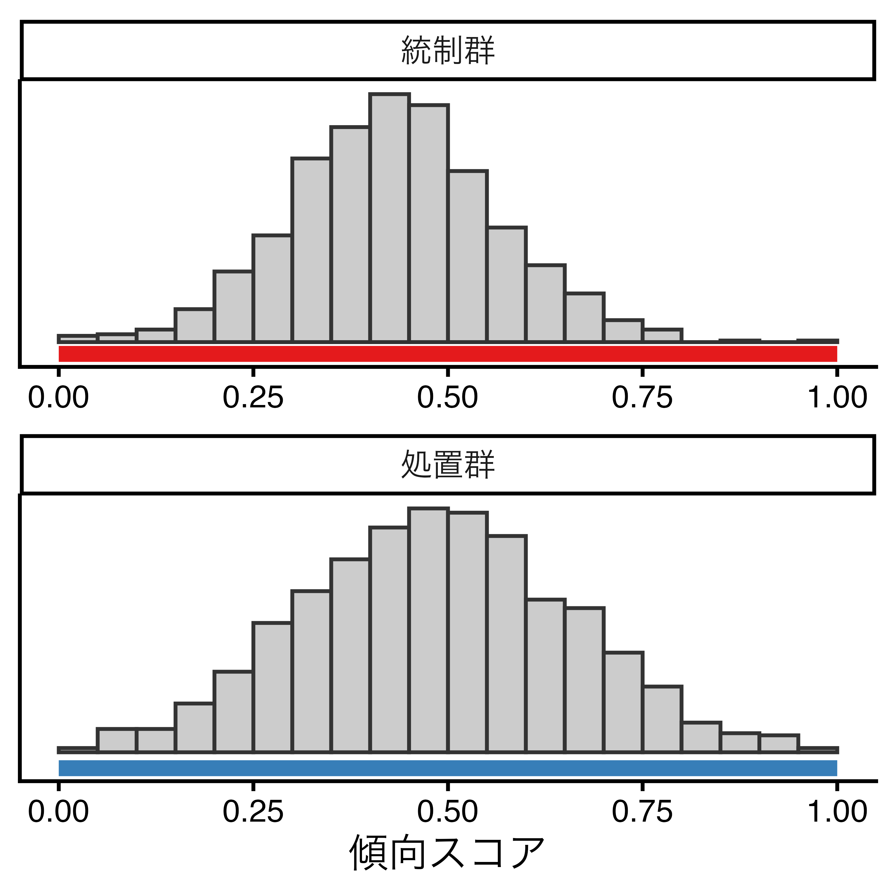
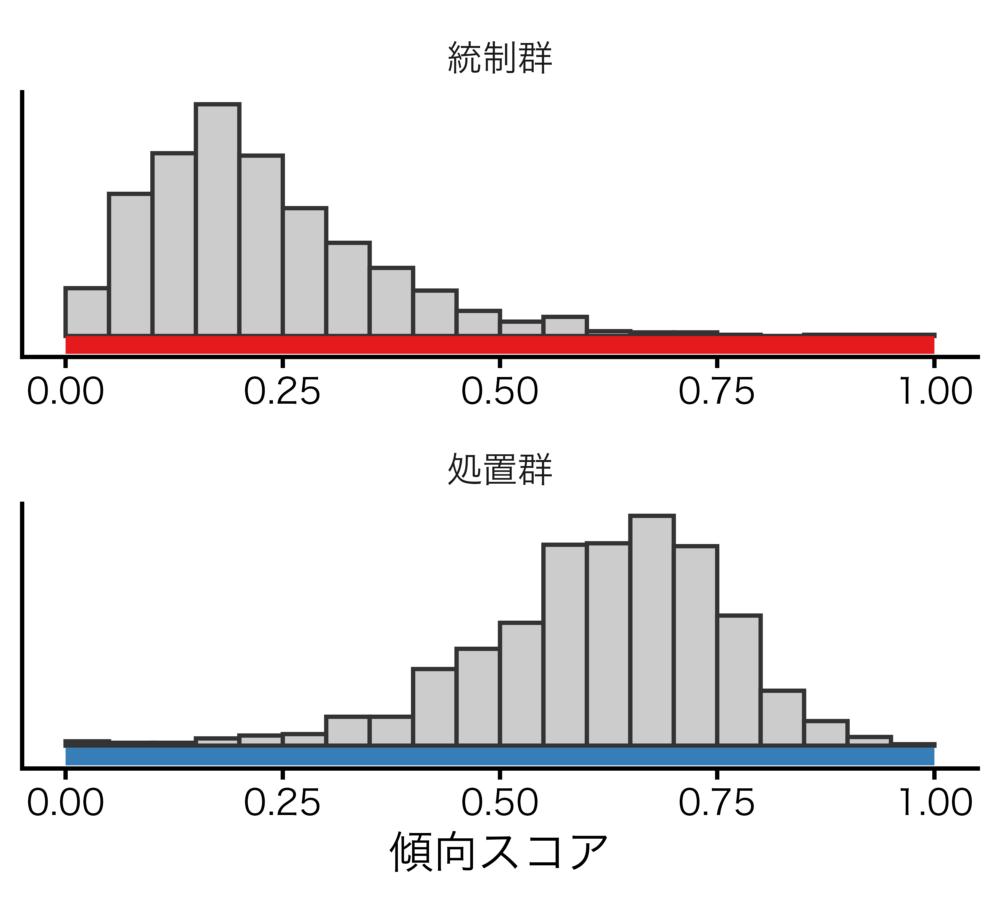
ATT（左）かATC（右）が推定可能な例
- 左：ATT推定可 ／ 右：ATC推定可
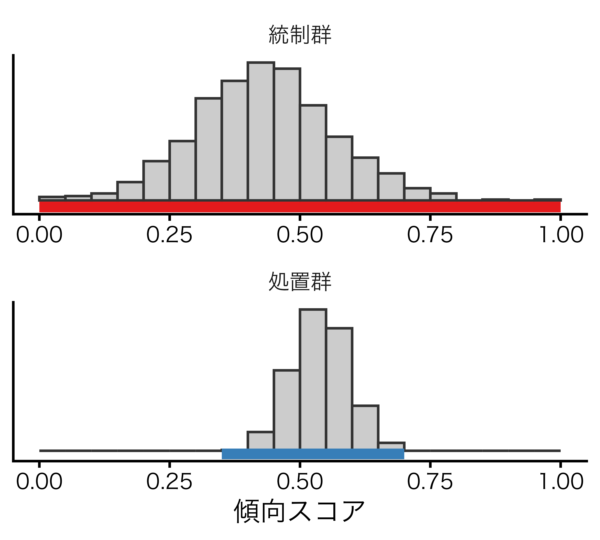
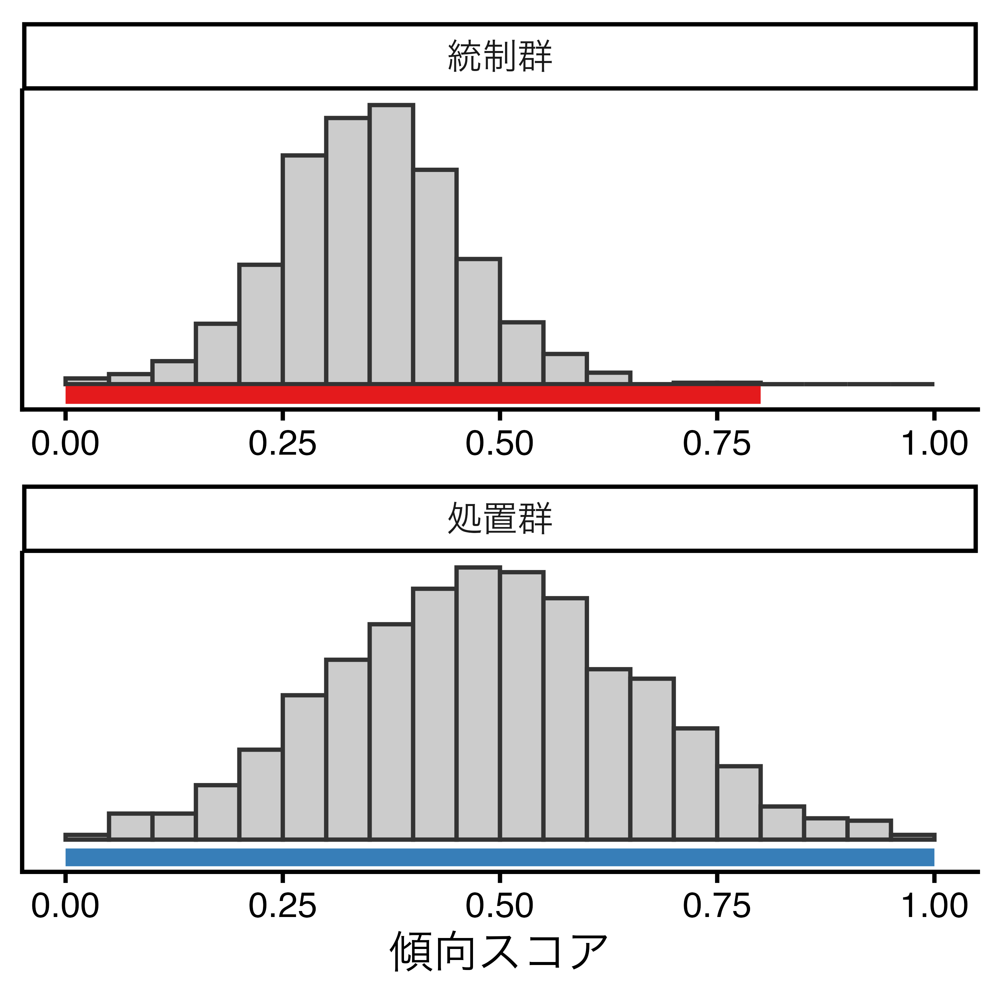
推定不可能な例
- 右の例の場合、ATO（後述）は推定可能
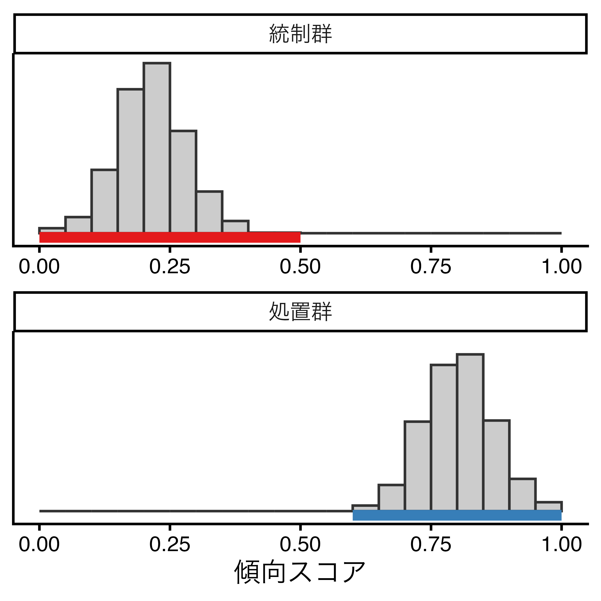
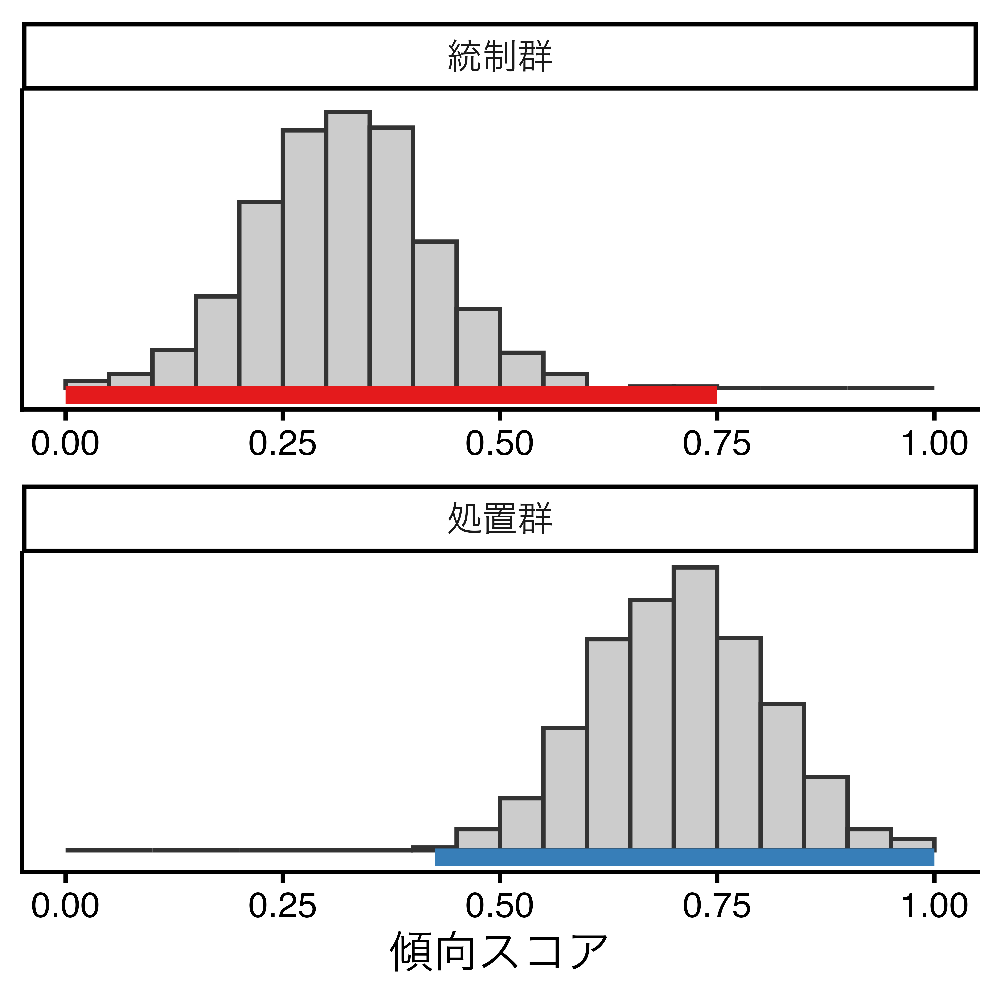
傾向スコアの使い方
-
マッチング（propensity score matching; PSM）
- 1:1マッチング：最近傍マッチング
- 1:kマッチング：k-最近傍マッチング、キャリパー・マッチング
- 傾向スコアを使ったマッチングは推奨されない（King and Nielsen 2019）
-
層化（stratification / subclassification）
- 傾向スコアを基準に個体を並べ、均等な数の個体が入るように\(k\)
- k:kマッチングの一種として考えることも可
- 重み付け（weighting）
3 推定：層化
層化による処置効果推定の手順
- 推定対象（estimand）を決める（ATT、ATC、ATE）
- 層（stratum, subclass）の数（ k ）を決める
- 一般的にk = 5を採用（Thoemmes and Kim 2011）
- 個体を各層に割り当てる
- 個々の個体に重みを与える
- 処置効果を推定する（加重平均、重み付き線形回帰分析[WLS]等）
ATT推定のための層化
処置群の個体数が\(k\)等分になるように層を決め、全個体を各層に割り当てる
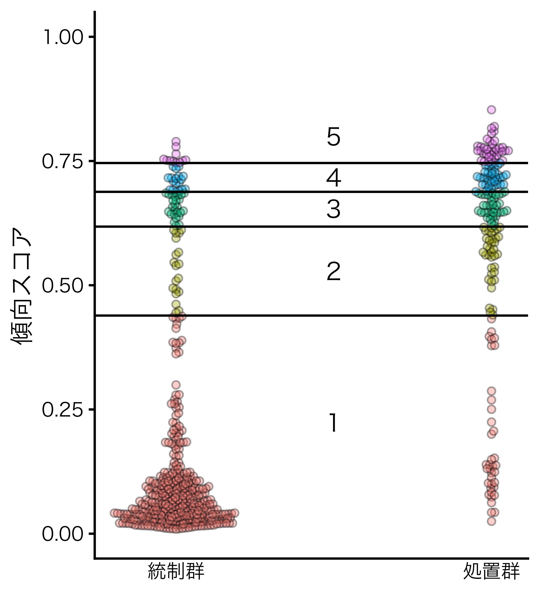
| 層 | 統制群のn | 処置群のn | 合計 |
|---|---|---|---|
| 1 | 356 | 37 | 393 |
| 2 | 19 | 37 | 56 |
| 3 | 25 | 37 | 62 |
| 4 | 18 | 37 | 55 |
| 5 | 11 | 37 | 48 |
| 層 | 統制群の重み | 処置群の重み |
|---|---|---|
| 1 | \(\frac{429}{185} \times \frac{37}{356}\) = 0.241 | 1.000 |
| 2 | \(\frac{429}{185} \times \frac{37}{19}\) = 4.516 | 1.000 |
| 3 | \(\frac{429}{185} \times \frac{37}{25}\) = 3.432 | 1.000 |
| 4 | \(\frac{429}{185} \times \frac{37}{18}\) = 4.767 | 1.000 |
| 5 | \(\frac{429}{185} \times \frac{37}{11}\) = 7.800 | 1.000 |
ATC推定のための層化
統制群の個体数が\(k\)等分になるように層を決め、全個体を各層に割り当てる
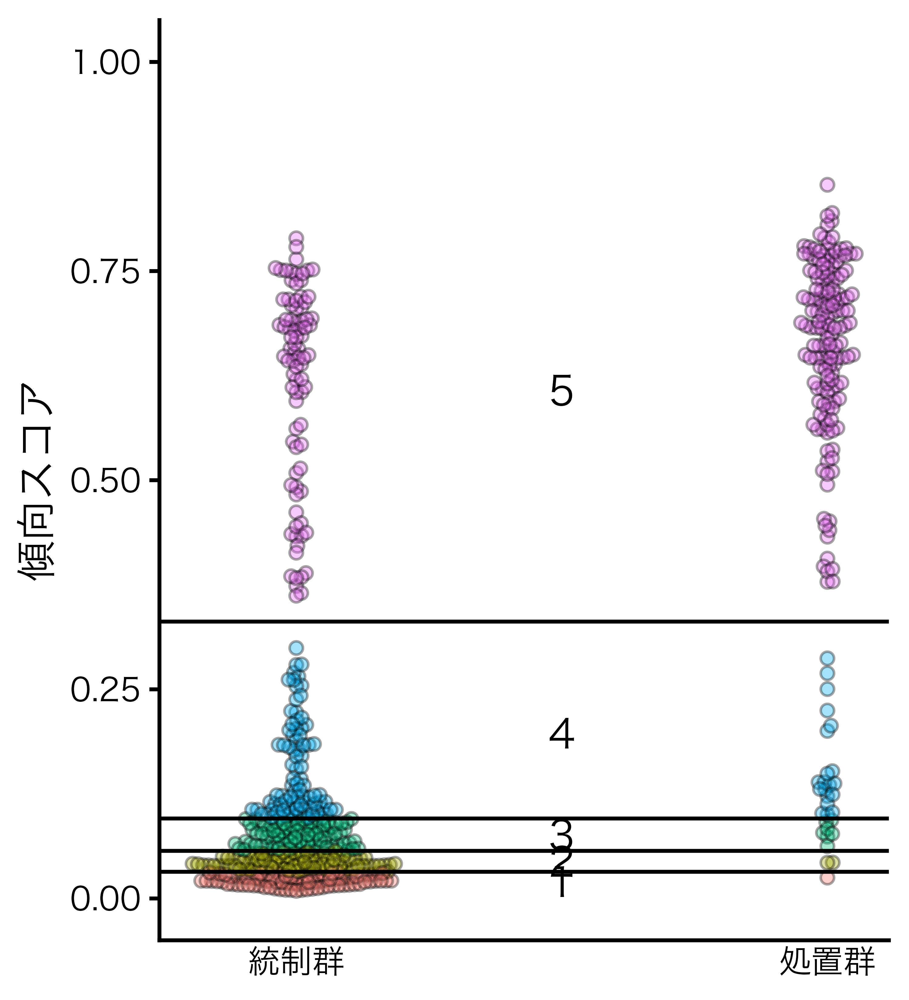
| 層 | 統制群のn | 処置群のn | 合計 |
|---|---|---|---|
| 1 | 86 | 1 | 87 |
| 2 | 86 | 2 | 88 |
| 3 | 86 | 7 | 92 |
| 4 | 86 | 20 | 106 |
| 5 | 86 | 155 | 241 |
| 層 | 統制群の重み | 処置群の重み |
|---|---|---|
| 1 | 1.000 | \(\frac{185}{429} \times \frac{86}{1}\) = 37.086 |
| 2 | 1.000 | \(\frac{185}{429} \times \frac{86}{2}\) = 18.543 |
| 3 | 1.000 | \(\frac{185}{429} \times \frac{86}{7}\) = 5.236 |
| 4 | 1.000 | \(\frac{185}{429} \times \frac{86}{20}\) = 1.854 |
| 5 | 1.000 | \(\frac{185}{429} \times \frac{86}{155}\) = 0.239 |
ATE推定のための層化
処置群と統制群の個体数の合計が\(k\)等分になるように層を決め、全個体を各層に割り当てる
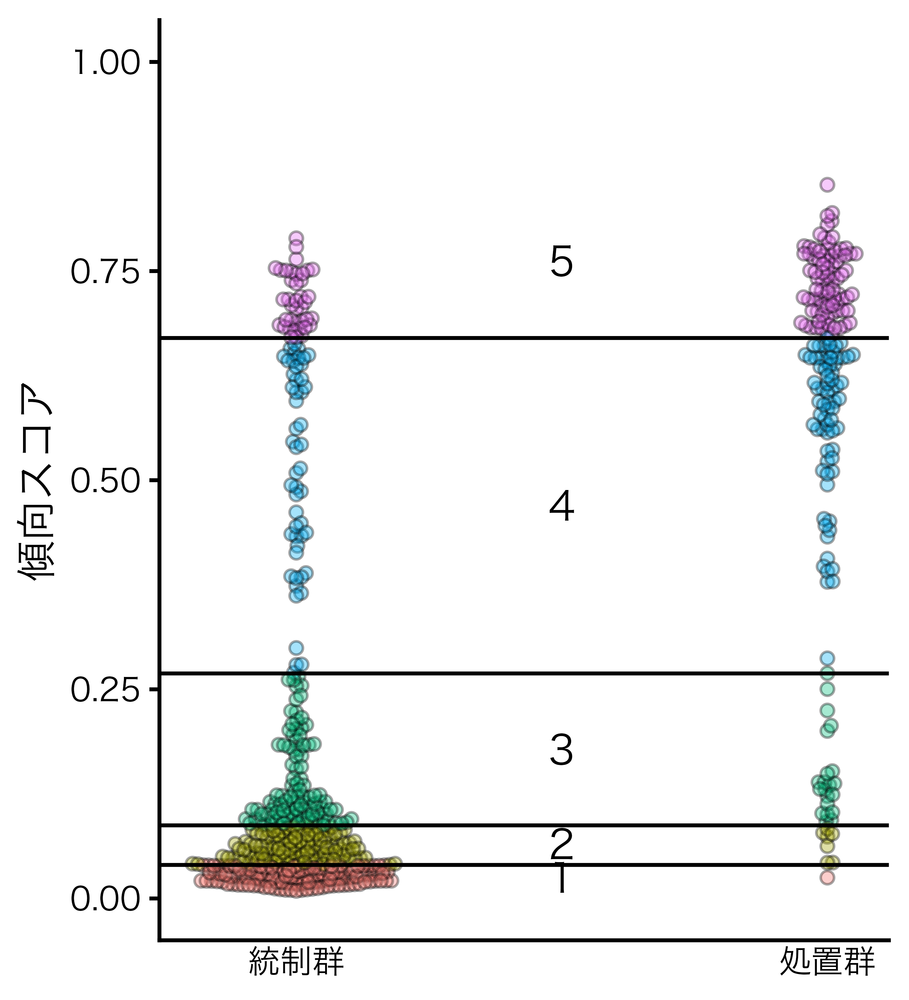
| 層 | 統制群のn | 処置群のn | 合計 |
|---|---|---|---|
| 1 | 122 | 1 | 123 |
| 2 | 116 | 7 | 123 |
| 3 | 101 | 21 | 122 |
| 4 | 51 | 71 | 122 |
| 5 | 39 | 85 | 124 |
| 層 | 統制群の重み | 処置群の重み |
|---|---|---|
| 1 | \(\frac{429}{614} \times \frac{123}{122}\) = 0.704 | \(\frac{185}{614} \times \frac{123}{1}\) = 37.060 |
| 2 | \(\frac{429}{614} \times \frac{123}{116}\) = 0.741 | \(\frac{185}{614} \times \frac{123}{7}\) = 5.294 |
| 3 | \(\frac{429}{614} \times \frac{122}{101}\) = 0.844 | \(\frac{185}{614} \times \frac{122}{21}\) = 1.750 |
| 4 | \(\frac{429}{614} \times \frac{122}{51}\) = 1.671 | \(\frac{185}{614} \times \frac{122}{71}\) = 0.518 |
| 5 | \(\frac{429}{614} \times \frac{124}{390}\) = 2.221 | \(\frac{185}{614} \times \frac{124}{85}\) = 0.440 |
層化における重み（まとめ）
- \(N\)：サンプルサイズ（全体）
- \(N_\sf{control}\)、\(N_\sf{treat}\)：統制群と処置群の個体数
- \(N_\sf{k}\)：k 層の個体数
- \(N_\sf{k, control}\)、\(N_\sf{k, treat}\)：k 層の統制群と処置群の個体数
| 推定対象 | 統制群の重み | 処置群の重み |
|---|---|---|
| ATT | \(\frac{N_\sf{control}}{N_\sf{treat}} \times \frac{N_\sf{k, treat}}{N_\sf{k, control}}\) | 1 |
| ATC | 1 | \(\frac{N_\sf{treat}}{N_\sf{control}} \times \frac{N_\sf{k, control}}{N_\sf{k, treat}}\) |
| ATE | \(\frac{N_\sf{control}}{N} \times \frac{N_\sf{k}}{N_\sf{k, control}}\) | \(\frac{N_\sf{treat}}{N} \times \frac{N_\sf{k}}{N_\sf{k, treat}}\) |
層化による推定（例）
head(my_data, n = 13)## treat y stratum weight
## 1 0 2752 3 1.00000
## 2 1 2164 5 0.23927
## 3 0 6821 4 1.00000
## 4 1 5150 4 1.85431
## 5 0 25514 1 1.00000
## 6 0 15538 4 1.00000
## 7 1 11143 4 1.85431
## 8 0 2282 5 1.00000
## 9 0 14146 1 1.00000
## 10 0 17359 1 1.00000
## 11 0 650 1 1.00000
## 12 0 1454 2 1.00000
## 13 0 6280 2 1.00000my_data |>
reframe(y = weighted.mean(y, w = weight),
.by = treat)
## treat y
## 1 0 6984.198
## 2 1 6334.135
6334.135 - 6984.198 # 処置効果の点推定値
## [1] -650.063lm(y ~ treat, data = my_data, weights = weight)##
## Call:
## lm(formula = y ~ treat, data = my_data, weights = weight)
##
## Coefficients:
## (Intercept) treat
## 6984.2 -650.14 推定：重み付け
重み付けによる処置効果の推定
各個体の重み（weight）を計算し、加重平均を使った期待値の差分を計算
- 重みは傾向スコアを使って計算するが、計算方法は推定したい対象（estimand）に応じて異なる
- 重み計算の考え方
- ATTの場合は処置群、ATCの場合は統制群の全個体に同じ重み（= 1）を付ける。
- 異常なケースにより高い重みを付ける
「異常なケース」とは?
傾向スコアが高い（= 処置を受ける可能性が高い）にもかかわらず統制群に割り当てられていたり、傾向スコアが低い（= 処置を受ける可能性が低い）にもかかわらず処置群に割り当てられていたりすることを「異常」とする。逆に、「低い傾向スコア & 統制群」、または「高い傾向スコア & 処置群」はあまり驚きではないから異常とは言いがたい。
重み付けの考え方（1）
- 信頼できる因果効果を得るためにはグループは均質である必要がある
- 無作為割り当て \(\leadsto\) 均質なグループへ
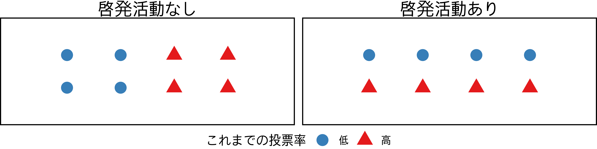
注意）これは単なるイメージであり、実際とは異なる
この内容は理解を助けるためのイメージであり、厳密なものではない。どちらかといえば逆確率重み付け（IPWでも）に近いイメージではあるが、厳密にはIPWでもない。具体的な重みの付け方（計算方法）は後ほど紹介する。
重み付けの考え方（2）
観察データの場合、処置群と統制群が均質とは限らない
- これまでの投票率の低い自治体だからこそ啓発活動に積極的になるなら…
- ▲：啓発活動を実施する可能性が低い（= 低い傾向スコア）
- ●：啓発活動を実施する可能性が高い（= 高い傾向スコア）

重み付けの考え方（3）
異常なケースに高い重みを与える
- 例）統制群における●の重みを2倍に \(\leadsto\) 各群の●が6つに
- 例）処置群における▲の重みを2.5倍に \(\leadsto\) 各群の▲が5つに
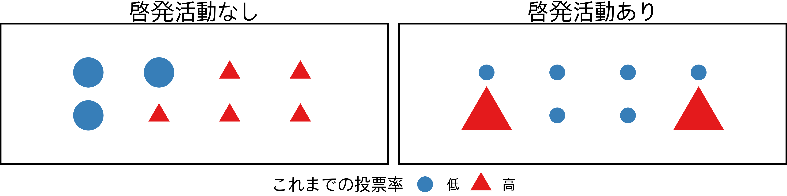
重み付けによる処置効果の推定の手順
- 推定対象（estimand）を決める（ATT、ATC、ATE）
- 個々の個体に重みを与える
- 処置効果を推定する（加重平均、重み付き線形回帰分析[WLS]等）
ATT、ATC推定のための重み付け
- ATT：処置群には1を、統制群には\(\frac{e_i(X)}{1 - e_i(X)}\)の重みを付ける
- ATC：処置群には\(\frac{1 - e_i(X)}{e_i(X)}\)を、統制群には1の重みを付ける
- 処置群の方が統制群よりもsmall-nの傾向があるため、ATCが推定対象となることはあまりない
\[ \begin{eqnarray} w_i^{\tiny\mbox{ATT}} & = & D_i + (1 - D_i) \frac{e_i(X)}{1 - e_i(X)} \\ w_i^{\tiny\mbox{ATC}} & = & D_i \frac{1 - e_i(X)}{e_i(X)} + (1 - D_i) \end{eqnarray} \]
ATT推定のための重み付けのイメージ
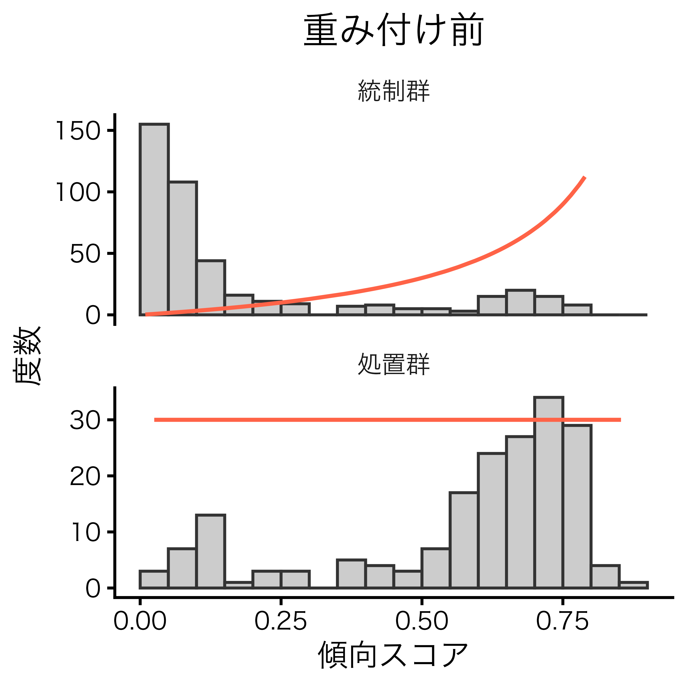
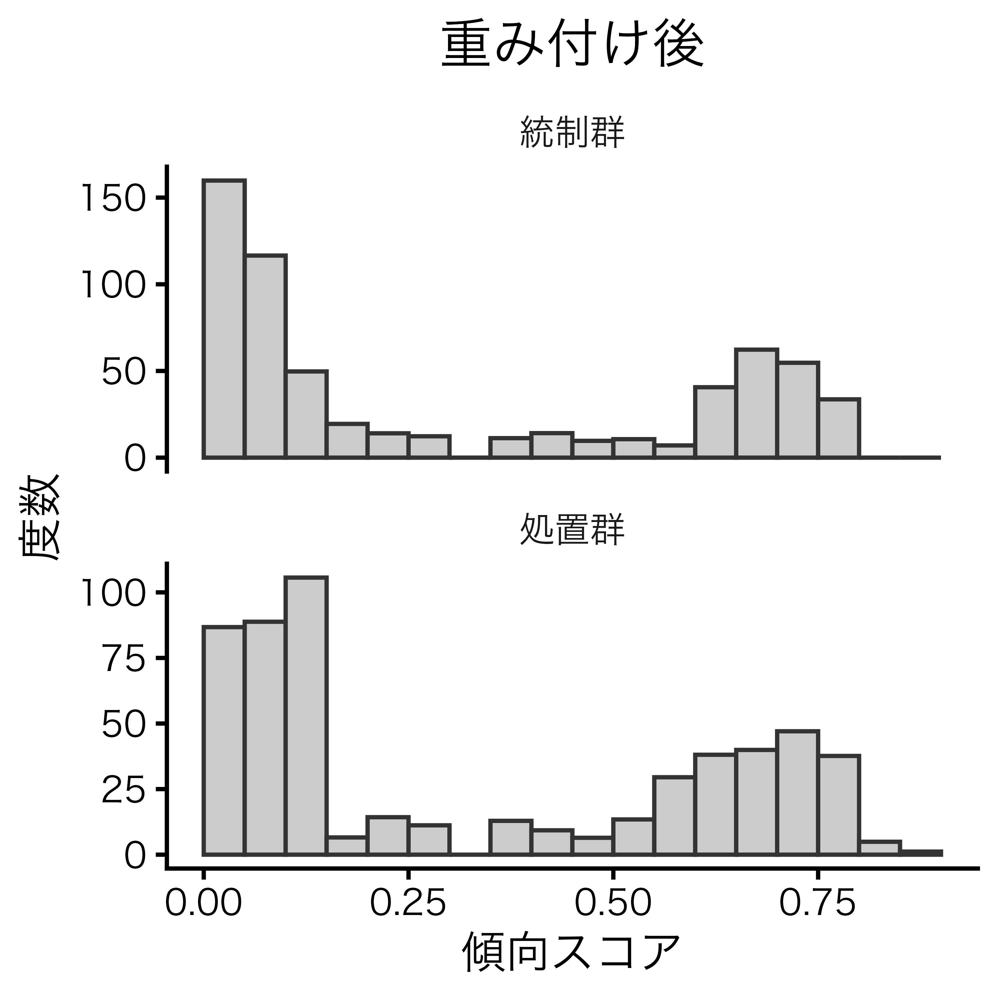
ATE推定のための重み付け
逆確率重み付け（inverse probabilty weighting; IPW）
- 各群に割り当てられる確率（= 傾向スコア）の逆数で重み付け
\[ w_i^{\tiny\mbox{ATE}} = D_i \frac{1}{e_i(X)} + (1 - D_i) \frac{1}{1 - e_i(X)} \]
- 各群におけるケースの「異常さ」と重みが比例
- 統制群：傾向スコアが大きいほど、重み\(\uparrow\)
- 処置群：傾向スコアが小さいほど、重み\(\uparrow\)
ATE推定のための重み付けのイメージ
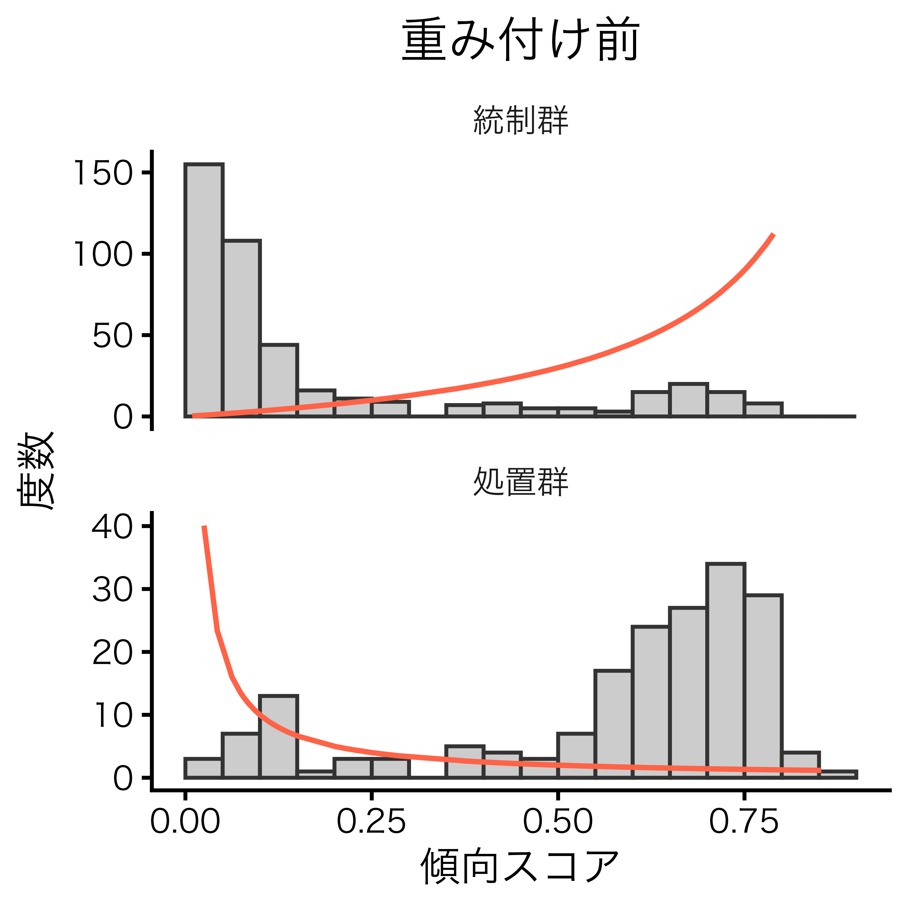

参考）ATO推定のための重み付け
ATO：Average treatment effect for the overlap population（Li et al. 2018）
- 傾向スコアが重なる集団における平均処置効果
- 共有サポートの仮定が満たされなくても推定可能な推定対象（estimand）
- 自然実験（を含む観察研究）では共通サポートの仮定が満たされないことが多いため、ATOが一つの解決策になる得る（Liu and Quinn 2026?）
- ただし、推定対象がATOであることを明記し、慎重に解釈する必要がある
- 処置群には\(1 - e_i(X)\)、統制群には\(e_i(X)\)の重みをつける
\[ w_i^{\tiny\mbox{ATO}} = D_i (1 - e_i(X)) + (1 - D_i) e_i(X) \]
重み付けによる推定（例）
head(my_data, n = 13)## treat y ps weight
## 1 0 2752 0.05913 1.0628
## 2 1 2164 0.77984 1.2823
## 3 0 6821 0.10288 1.1147
## 4 1 5150 0.13902 7.1935
## 5 0 25514 0.02856 1.0294
## 6 0 15538 0.16008 1.1906
## 7 1 11143 0.26920 3.7147
## 8 0 2282 0.71932 3.5627
## 9 0 14146 0.02158 1.0221
## 10 0 17359 0.02113 1.0216
## 11 0 650 0.03185 1.0329
## 12 0 1454 0.05003 1.0527
## 13 0 6280 0.04382 1.0458my_data |>
reframe(y = weighted.mean(y, w = weight),
.by = treat)
## treat y
## 1 0 6422.869
## 2 1 6647.559
6647.559 - 6422.869 # 処置効果の点推定値
## [1] 224.69lm(y ~ treat, data = my_data, weights = weight)##
## Call:
## lm(formula = y ~ treat, data = my_data, weights = weight)
##
## Coefficients:
## (Intercept) treat
## 6422.9 224.75 実践上の注意点
共有サポートの確認
- 傾向スコアの分布を統制群—処置群間で確認
- 箱ひげ図、ビースウォーム（Bee Swarm）図、ヒストグラムなど

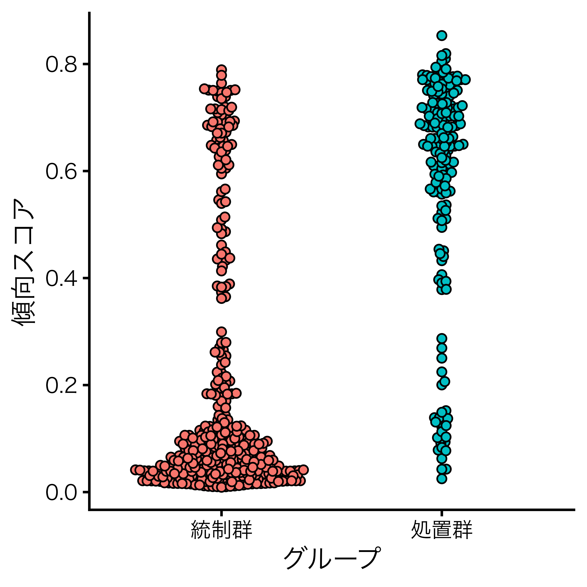
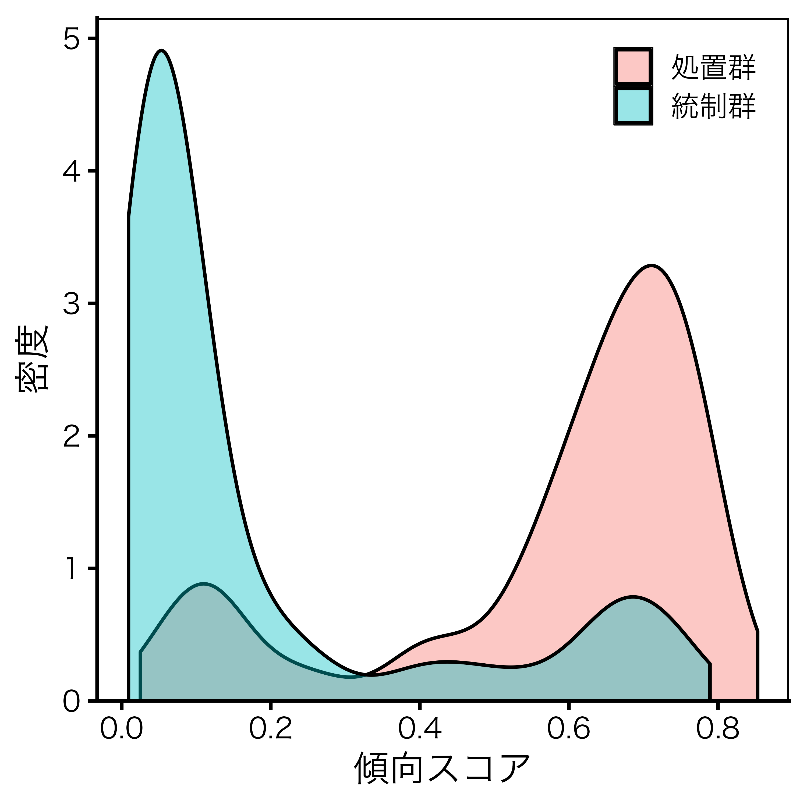
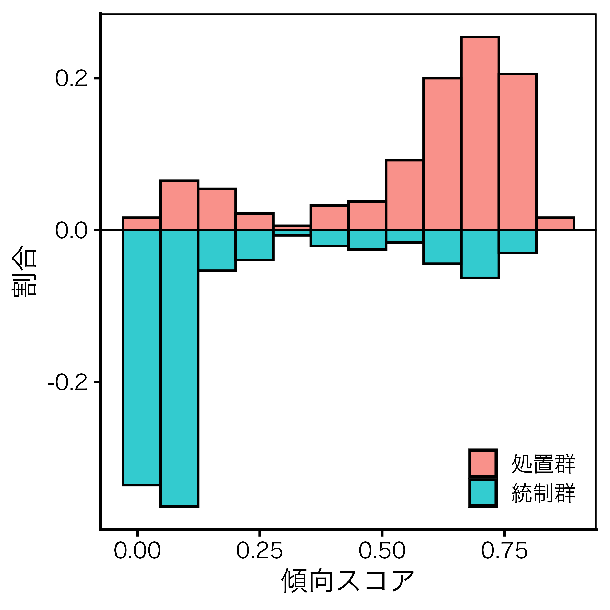
バランスチェック
- 傾向スコアによる調整後に、処置群と統制群の間のバランスが改善したかを確かめる
- 傾向スコアと各共変量、両方のバランスを確認する
- バランスの指標：標準化1平均差（standardized mean difference; \(d\)）
- \(\overline{X}_{\sf treat}\)：処置群における\(X\)の平均値 ／ \(s^2_{X_{\sf treat}}\)：処置群における\(X\)の分散
\[ d_X = \frac{\overline{X}_{\sf treat} - \overline{X}_{\sf control}}{\sqrt{\frac{1}{2}(s^2_{X_{\sf treat}} + s^2_{X_{\sf control}})}} \]
- 「バランス」の基準：\(|d|\) < 0.1（厳しい基準; 推奨）、\(|d|\) < 0.25（緩い基準）
バランスチェックの可視化
以下は{cobalt}パッケージを使用したバランスチェックの例
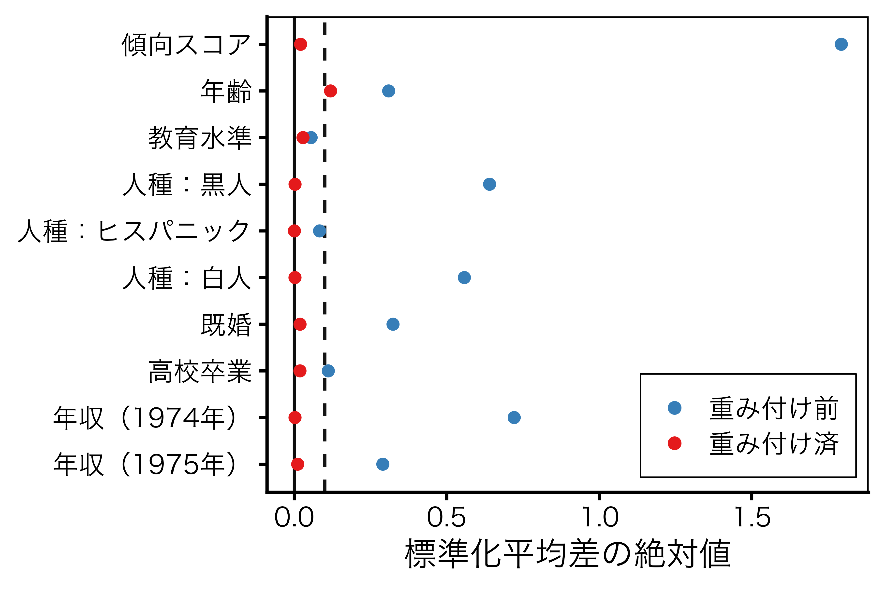
傾向スコアを用いた調整はバランスの改善を保証しない
傾向スコアは共変量のバランスではなく、（大雑把にいえば）予測精度を基準で計算されたものであるため、バランスが改悪されることもあり得る。共変量のバランス改善の程度を基準に計算される傾向スコアとして「共変量バランシング傾向スコア（CBPS）」というものがある。
参考）共変量バランシング傾向スコア
共変量バランシング傾向スコア（covariate balancing propensity score; CBPS）（Imai and Ratkovic 2014）
- 従来の最尤推定法（ロジットなど）による傾向スコア計算の限界
- 「処置割当の予測」の最適化が目的であり、「共変量のバランス」を保証するものではない
- Small-N、モデルの不適切な定式化によるバランスの不十分な改善
- \(\Rightarrow\) CPBSは「傾向スコアの推計」と「共変量のバランス最適化」を同時に行う
- Rの定番パッケージ（{MatchIt}、{WeightIt}）でも簡単に使用可能
処置効果推定時の共変量について（要検討）
傾向スコア計算時に使用した共変量を結果変数モデル1にも入れるべきか
傾向スコア・モデル：\(D \propto \gamma_0 + \gamma_1 X_1 + \gamma_2 X_2\)
アウトカム・モデル（1）：\(Y = \alpha + \beta D\)
アウトカム・モデル（2）：\(Y = \alpha + \beta_1 D + \beta_2 X_1 + \beta_3 X_2\)
-
結論：必須ではないが、共変量を投入することが合理的
- メリット：精度向上、残存する不均衡2の補正（Austin 2011）
極端な重みの弊害
重みの「爆発」
- 傾向スコアが0や1に極めて近づくと、重み（\(\frac{1}{e(X)}\)や\(\frac{1}{1 - e(X)}\)）が極大化
- \(e(X)\) = 0.001の場合、\(\frac{1}{e(X)}\)は100 \(\Rightarrow\) 100倍の重み
- \(\leadsto\) 推計精度の悪化：わずか数個体のデータが全体推計値を支配し、標準誤差が著しく増大
- 傾向スコアの計算後、極端な傾向スコアがあるかを確認する
極端な重みへの対処
- トリミング（trimming） or クリッピング（clipping） or ウィンザー化（Winsorizing）
- 重みの上位1〜5%の削除、傾向スコアが0.1〜0.9の個体のみを使用（Crump et al. 2009）
- 分散を大幅に低減できるが、新たなバイアスが生じるリスク
- 他にもハジェク推定量（Hajek estimator）、推定対象をATOにするなど
傾向スコア